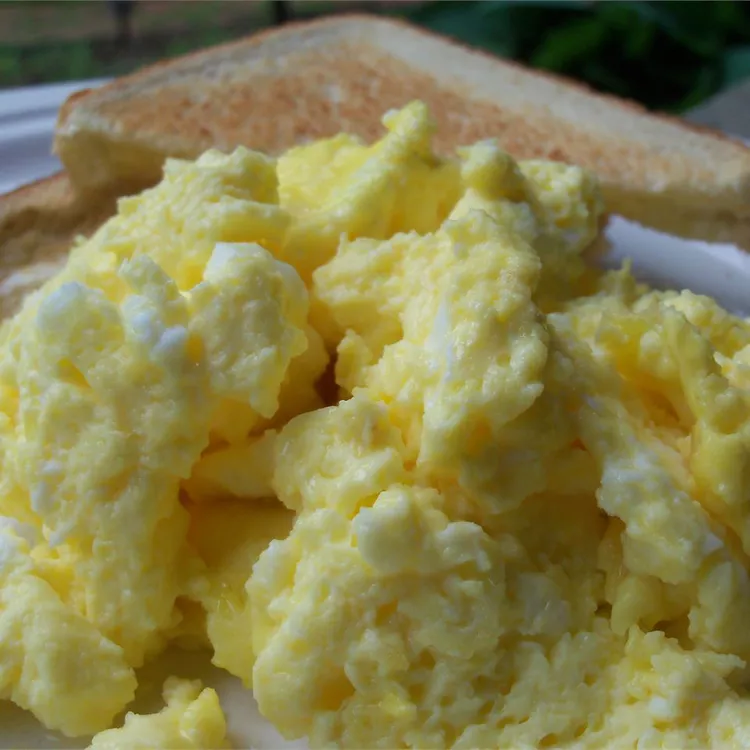

Home
Oven Scrambled EGGS

If you're making scrambled eggs for a crowd, then it's time to use the oven instead of the stovetop. This recipe makes 12 hearty servings and is ready in about half an hourIf you're making scrambled eggs for a crowd, then it's time to use the oven instead of the stovetop. This recipe makes 12 hearty servings and is ready in about half an hour
Ingredients
- ½ cup butter, melted
- 24 large eggs
- 2 ¼ teaspoons salt
- 2 ½ cups milk
Directions
- Gather all ingredients. Preheat the oven to 350 degrees F (175 degrees C)
- Pour melted butter into a 9x13-inch glass baking dish
- Whisk eggs and salt together in a large bowl until well blended. Gradually whisk in milk. Pour egg mixture into the buttered dish.
- Bake uncovered in the preheated oven for 10 to 15 minutes. Stir egg mixture and continue to bake until eggs are set, 10 to 15 minutes more.
- Serve and enjoy!
Home